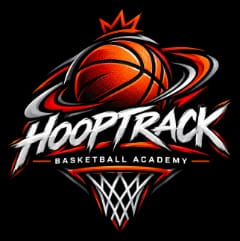
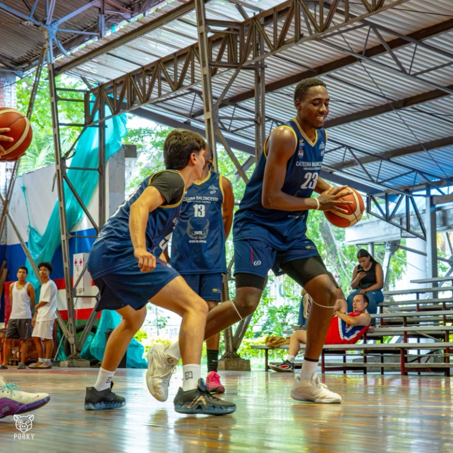
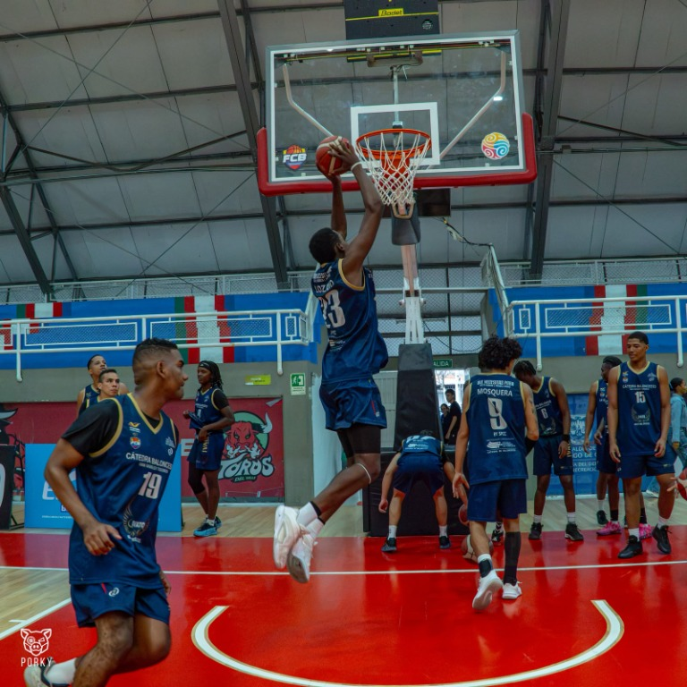

MENSUALIDAD ACTUAL
$140.000
Tarifa mensual actual: $140.000 COP, según el proyecto.

HooptrackBasketball Academy PASIÓN POR EL JUEGOHOOPTRACK BASKETBALL ACADEMY
Formamos deportistas dentro y fuera de la cancha. Estamos construyendo una propuesta de formación en baloncesto que equilibra calidad, comunidad y una mensualidad sostenible para las familias.
Conoce nuestro proyectoTalento, disciplina y equipo: cada entrenamiento cuenta.
QUIÉNES SOMOS
HoopTrack es un centro de acondicionamiento físico especializado en jugadores de baloncesto en la ciudad de Cali. Buscamos mejorar su rendimiento y reducir el riesgo de lesiones mediante una preparación física individualizada, de acuerdo con la posición de juego, las características de cada deportista y sus objetivos.
01 / EL RETO DE CRECER EN EQUIPO
El estudio busca entender qué valoran deportistas y familias para hacer sostenible la experiencia Hooptrack.
$140.000
Tarifa mensual actual: $140.000 COP, según el proyecto.
$100.000
2 días por semana, sin costos de ligas; $100.000 COP por validar.
120
Meta de encuestas a familias y practicantes de la zona.
17
2 grupos focales y 3 entrevistas en profundidad.
La tarifa actual y las metas de muestra describen el proyecto; no son resultados de encuestas ya aplicadas.
METODOLOGÍA Y ALCANCE
El documento propone combinar encuesta, conversación y análisis de precios para orientar decisiones de Hooptrack.
Respuestas válidas como meta, mediante muestreo por cuotas a acudientes y practicantes del sector.
Participantes previstos en total: grupos focales y entrevistas a profundidad, según el documento.
Personas previstas para revisar la claridad del cuestionario antes de la aplicación completa.
La meta de 120 encuestas usa muestreo por cuotas en un radio de influencia de 3 a 5 km; no es una muestra probabilística ni permite afirmar representatividad estadística de toda la población. El documento no incluye respuestas recolectadas ni resultados calculados.
El plan cualitativo consigna 17 participantes, dos grupos focales de 6 a 8 personas y 3 entrevistas. Conviene confirmar la distribución exacta de los grupos, porque esos rangos pueden sumar entre 15 y 19 participantes. También se prevé validar el orden lógico de los precios y depurar duplicados, respuestas demasiado rápidas y patrones planos.
02 / UNA EXPERIENCIA QUE SUMA
Una escuela sostenible combina entrenamiento de calidad, buenas instalaciones y opciones que se ajusten a las necesidades de cada familia.
03 / ESCUCHAMOS A LA COMUNIDAD
El estudio medirá necesidades, experiencia y disposición a pagar para orientar las decisiones de Hooptrack.
| DIMENSIÓN | QUÉ QUEREMOS CONOCER |
|---|---|
| Precio y valor | Sensibilidad al precio con Van Westendorp. |
| Experiencia deportiva | Entrenamiento, materiales, cancha e iluminación. |
| Costos y permanencia | Gastos adicionales, horarios e intención de continuar. |
Metodología propuesta: focus groups, entrevistas y encuesta estructurada.
04 / EL BALONCESTO EN ACCIÓN
Ilustraciones de referencia para mostrar la energía del entrenamiento y el valor del equipo.


05 / CONVERSEMOS
Escríbenos para conocer los planes de entrenamiento o resolver tus dudas sobre Hooptrack.
06 / TRANSPARENCIA Y PRIVACIDAD
Completa y revisa estos datos antes de publicar esta política:
Los datos enviados en el formulario se usarán para responder consultas sobre los servicios de Hooptrack. La información de deportistas, acudientes y participantes de la investigación se mantendrá privada; los resultados del estudio se presentarán de forma agregada.
Las personas pueden solicitar consulta, actualización, corrección o supresión de sus datos, o revocar la autorización, mediante el canal de contacto que complete el responsable. Publique esta política tras su revisión y ajuste a los procedimientos aplicables.
El estudio plantea una muestra cuantitativa objetivo de 120 encuestas por cuotas y una fase cualitativa de 17 participantes; estas cifras describen el diseño propuesto, no resultados finales. Los hallazgos no deben generalizarse a toda la población de deportistas de la zona.